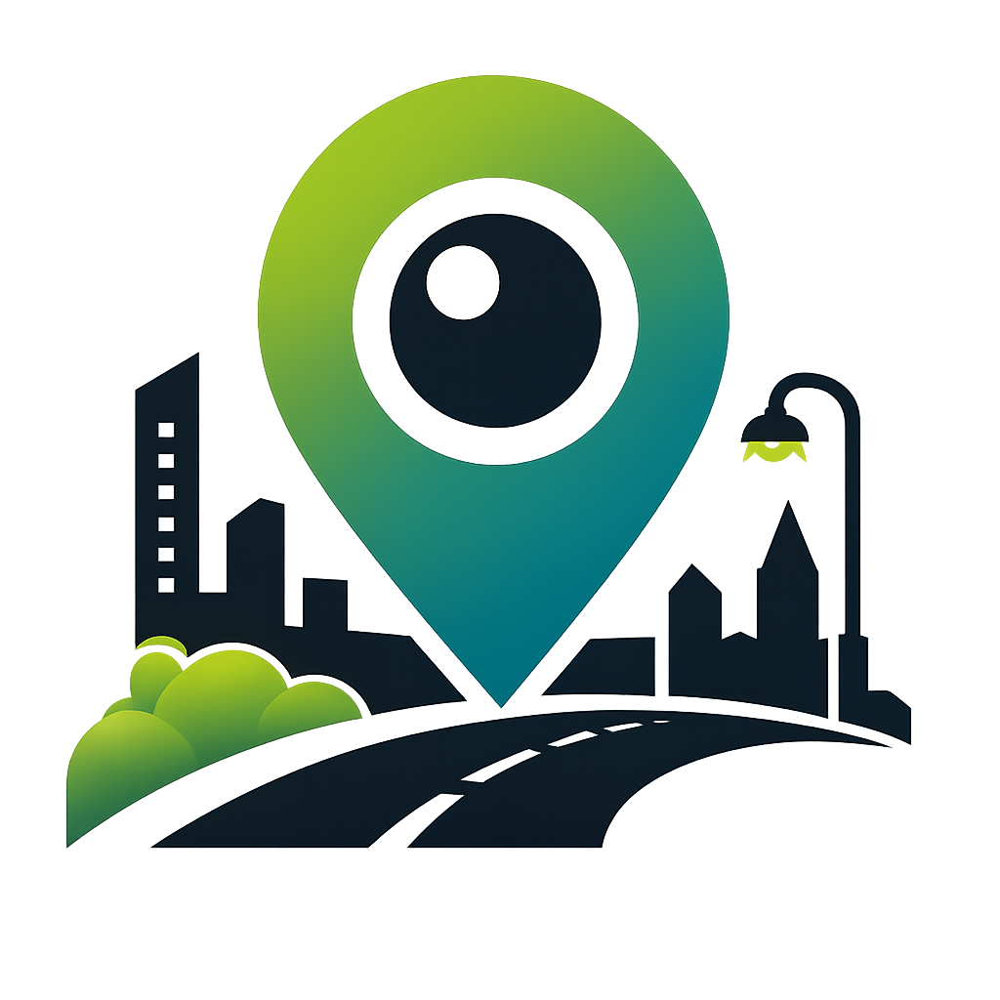

Foco Urbano
Tu ciudad, tu voz, tu cambio.
Reporta problemas urbanos de tu comunidad y ayuda a mejorar David.
Crear cuenta
Registro ciudadano
Completa tus datos para crear tu cuenta.
¿Ya tienes cuenta? Inicia sesión
Iniciar sesión
Bienvenido de nuevo
Inicia sesión para continuar.
¿No tienes cuenta? Regístrate
Acceso municipal
Funcionario municipal
Acceso exclusivo para personal autorizado.
Recuperar contraseña
¿Olvidaste tu contraseña?
Ingresa tu correo y te enviaremos un código de verificación.
¿Recordaste tu contraseña? Inicia sesión
Verificar código
Revisa tu correo
Escribe el código de 6 dígitos que enviamos a tu correo.
¿No te llegó el código? Reenviar código
Nueva contraseña
Crea tu nueva contraseña
Escribe y confirma tu nueva contraseña.
Hola, ciudadano
Crear reporte
Reporta un problema en tu comunidad
¿Cómo usar Foco Urbano?
Presiona Crear reporte para informar un problema de tu comunidad.
Selecciona la categoría, el corregimiento, escribe un título y describe el problema.
Presiona "Usar mi ubicación" para que el mapa marque el punto exacto. La foto es opcional.
Cada reporte cuenta.
Tu voz puede transformar nuestra ciudad.
Crear reporte
Información del problema
Ubicación no detectada todavía.
Formatos: JPG, PNG o WebP. Máximo 5 MB.
Reportes
Detalle del reporte
Mapa de reportes
Toca los marcadores para ver el tipo de reporte y su estado.
Notificaciones
Cambiar contraseña
Ayuda
FOCO URBANO
Todo lo que necesitas saber para usar la app.
Presiona "Crear reporte" e incluye foto, ubicación y descripción del problema.
El municipio lo recibe y lo clasifica según su categoría.
Pendiente → En revisión → En proceso → Resuelto/Rechazado.
Desde "Reportes", o mira los de toda la comunidad en el Mapa.
Sí, te avisaremos cuando tu reporte cambie de estado o sea atendido.
Se envía directamente al sistema municipal para su revisión.
Panel municipal
Reportes recibidos
Gestiona los reportes enviados por los ciudadanos.
Mapa municipal
Reportes en David
Cargando mapa...
Notificaciones
Perfil funcionario
Funcionario Municipal
funcionario@municipio.com
Configuración
Soporte
Ayuda y preguntas frecuentes
PANEL MUNICIPAL
Guía rápida para gestionar los reportes ciudadanos.
Entra a "Home" y toca cualquier reporte de la lista para ver toda su información y ubicación.
Dentro del detalle, selecciona el nuevo estado, agrega un comentario si lo deseas y presiona "Guardar cambios".
Usa las pestañas superiores: Todos, Pendientes, En proceso, Resueltos o Rechazados.
En "Mapa" puedes ver todos los reportes ubicados geográficamente y tocar cada marcador.
Cada vez que un ciudadano crea un reporte, verás un aviso en la sección "Avisos".